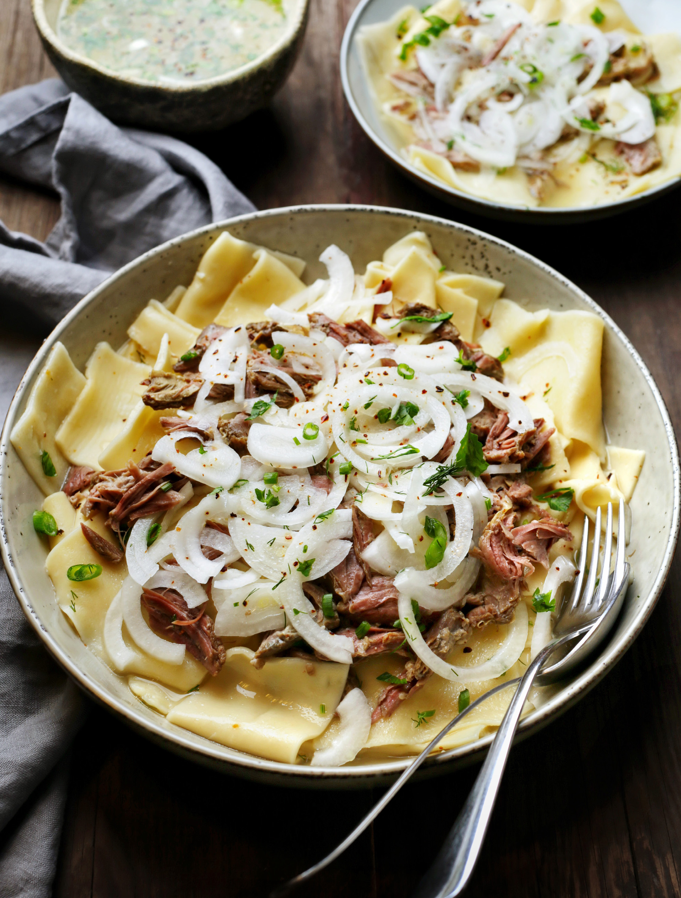

Традиционное, часто праздничное блюдо тюркских народов, особенно популярное у киргизов и казахов. Чем важнее повод торжества и богаче стол, тем больше мяса будет в блюде. Кроме баранины в бешбармак традиционно добавляют конину и колбасу из нее. В наши дни блюдо немного изменилось, потому что конину и конскую колбасу не везде можно найти, да и не все это едят. Поэтому бешбармак чаще готовят только из баранины, допустимы и альтернативные варианты с говядиной или другими видами мяса. Для насыщенного бульона лучше использовать мясо на кости. В готовое блюдо добавляют лук, ошпаренный кипящим бульоном, иногда редьку, нарезанную тонкой соломкой. Лук можно отварить до прозрачности, но вкуснее, когда он чуть упругий, просто потерявший остроту и горечь. При желании при подаче можно влить немного уксуса, особенно такая рекомендация понравится тем, кто любит добавлять уксус к пельменям. Лапша в этом блюде — замена хлеба. Кроме нее в бешбармак можно добавить и отварную картошку.
для лапши: